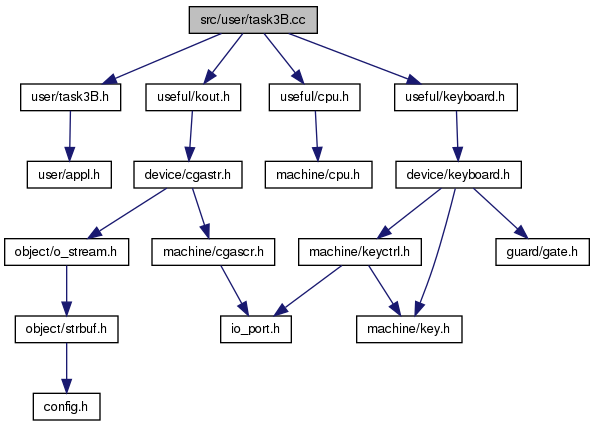

#include "user/task3B.h"#include "useful/kout.h"#include "useful/cpu.h"#include "useful/keyboard.h"
Include-Abhängigkeitsdiagramm für task3B.cc:

gehe zum Quellcode dieser Datei
Funktionen | |
| unsigned int | alphaAckermann (unsigned int a, unsigned int n) |
| unsigned int | doAckermann (unsigned int a, unsigned int b, unsigned int n) |
| void | doTask3BAction (unsigned int *ende) |
| void | gotoAnalyse (void) |
| void | outputAckermannResult (unsigned int x, unsigned int y, unsigned int n, unsigned int uRes) |
Variablen | |
| bool | bFirstOccurance = true |
Dokumentation der Funktionen
| unsigned int alphaAckermann | ( | unsigned int | a, |
| unsigned int | n | ||
| ) |
| unsigned int doAckermann | ( | unsigned int | a, |
| unsigned int | b, | ||
| unsigned int | n | ||
| ) |

| void doTask3BAction | ( | unsigned int * | ende | ) |
| void gotoAnalyse | ( | void | ) |
Hier ist ein Graph der zeigt, wo diese Funktion aufgerufen wird:
| void outputAckermannResult | ( | unsigned int | x, |
| unsigned int | y, | ||
| unsigned int | n, | ||
| unsigned int | uRes | ||
| ) |